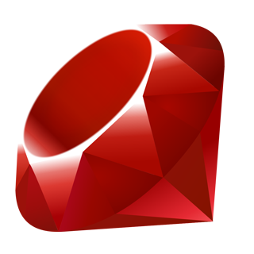

Ruby
A Programmer's Best Friend
@webdevesgi 2013 - @rhannequin
Ruby c'est quoi ?
Merci Google
Langage interprété
Orienté objet
Typage fort et dynamique
Multi-paradigmes
Histoire
Créateur Yukihiro « Matz » Matsumoto
24/02/93 création de Ruby
25/12/96 Ruby 1.0
24/02/13 Ruby 2.0
Philosophie
Écrire des algos en anglais
Designé pour la productivité et le fun
Orienté développeur plutôt que machine
C'est le développeur qui écrit le code, c'est lui le maître

Implémentation
Toute donnée est un objet, y compris les types
Toute fonction est une méthode
Toute variable est une référence à un objet
Multi-paradigmes
Orienté objet
Procédural
Fonctionnel
Syntaxe
Conditions
if ruby > php
print "You don't say"
else
print "You kiddin' me??"
end
if ok? then print "ok"
unless ok? then print "not ok"
Boucles
for cat in cats
print "Owww #{cat} <3"
end
while is_night?
sleep
end
work until tired
Hash et symboles
{ 1 => "one" }
{ "one" => 1 }
{ :one => "one" }
> "symbol".to_sym
#=> :symbol
Blocks
["Bulbizarre", "Salamèche", "Carapuce"].each do |pokemon|
puts "Do you want to fight Regis with #{pokemon}?"
end
array = [1, 2, 3, 4]
array.iterate! do |n|
n ** 2
end
puts array.inspect
# => [1, 4, 9, 16]
Classes, modules et mixins
class Human
attr_accessor :name
def initialize(name)
@name = name
end
end
class Dev < Human
attr_accessor :skills
def initialize(name, skills)
super(name)
@skills = skills
end
end
> r = Dev.new "rhannequin", ["backend", "noob"]
> print "My name is #{r.name} "
> print "and my skills are #{r.skills.join(', ')}."
#=> My name is rhannequin and my skills are backend, noob.
Les petits plus
> is_allowed?
#=> true
> (1..9).to_a
#=> [1, 2, 3, 4, 5, 6, 7, 8, 9]
> [1...10].to_a
#=> [1, 2, 3, 4, 5, 6, 7, 8, 9]
> 5.times {print "lol "}
#=> lol lol lol lol lol
Un petit dernier pour la route
def some_method(a, b, c=5, *p, q)
end
some_method(25, 35, 45)
a=25 b=35 c=5
p=[] q=45
some_method(25, 35, 45, 55)
a=25 b=35 c=45
p=[] q=55
some_method(25, 35, 45, 55, 65)
a=25 b=35 c=45
p=[55] q=65
some_method(25, 35, 45, 55, 65, 75)
a=25, b=35 c=45
p=[55, 65] q=75
Vous en voulez plus ?
Démo avec Sinatra
Sinatra
Créé en 2007
Léger et flexible
Basé sur Rack
Non-orienté MVC
Système de routing très puissant
Fait pour créer des applis Web très rapidement
Ruby On Rails est beaucoup plus riche et complexe
Pokedex